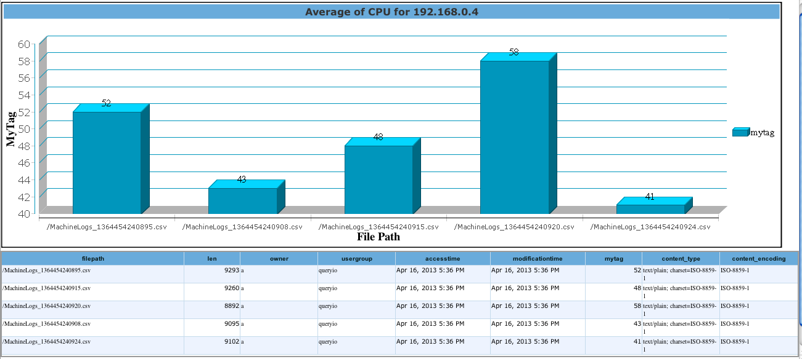

Data Tagging
In this chapter
Following documents explain Data Tagging:
Description
Data Tagging is used to add custom data tags to the metadata table for any file type.
The value of the tag defined by the user can be any constant value, global function or an operator on any table column.
One can also define conditions based on which the data will be tagged.
Data tagging can be scheduled on-ingest or post-ingest.
You can choose to define data tags using the schema you have already defined using Hive DDL or can choose System defined schemas for different file formats.
To add a data tag, navigate to Data > Data Tagging view.
Add Data Tag
Following example guides you to add a data tag on a metastore table : metdata_pdf which counts the number of words for all PDF files created by particular author.
- Click on Add button in the Data Tagging view to define a new Data Tag.
- Tag ID: Enter a unique ID for data tag which will be column name in your metadata table. [For example : MyTag]
- Tag Description: Provide description for this tag. [Say : Average of CPU for 192.168.0.4]
- Select NameNode: Select a namespace under which files will be parsed for tagging.
- Select Database: Select a database from Metastore database or Hive database on tables of which tags will be added. For our example, select Hive .
- Is Enabled: Check box to enable or disable the data tagging.
- Click on Next to define the operator and conditions.
- Select Table: Select hivecsvtable1 table.
- Operator Type: You can choose the tag value to be
- Global Function: Function applied on entire content of the file and resultant value is given to the tag.
- Table Column Operator: Operation is performed on a chosen column name from the defined schema and the resultant value is given to the tag (option not available in case no table is chosen).
- Constant Value: A single constant value is given to the tag.
For our example, select the "Table Column Operator" as "avg(CPU)"
- Conditional Expression: You can provide a compound expression that contains a condition on your data, which when evaluated to true would be included in the computation of Tag Value. Now to tag only those entries where IP is 192.168.0.4, use the wizard to easily define conditional expressions as "IP = 192.168.0.4".
- Click on next to Schedule the data tag.
- When do you want data tags to be applied:
- On Ingest: Tagging job will be performed while importing files to QueryIO.
- Post-Ingest: Tagging job will be performed at chosen time intervals starting from a mentioned time.
- Apply this data tag to existing data: If checked then the tag will be applied to existing data when specified.
- Apply Now: Choose this to apply tag just after the data tag is defined.
- Schedule Time: Choose this to apply tag on specified time.
- Click on Add to add newly created tag into tags list.
- Tag will be added to tags list and can be viewed in Data > Data Tagging.
You can use Data Import to import data to the cluster and check the tags added in metadata table using Query Designer
For our example, this is the result for query on table "hivecsvtable1" where we have added a Data Tag "MyTag". The graph below shows the Tag Value, as "Average of CPU for 192.168.0.4", on Y-axis and individual File Path on X-axis.

Copyright © 2015 QueryIO Corporation. All Rights Reserved.
QueryIO, "Big Data Intelligence" and the QueryIO Logo are trademarks
of QueryIO Corporation. Apache, Hadoop and HDFS are trademarks of The Apache Software Foundation.